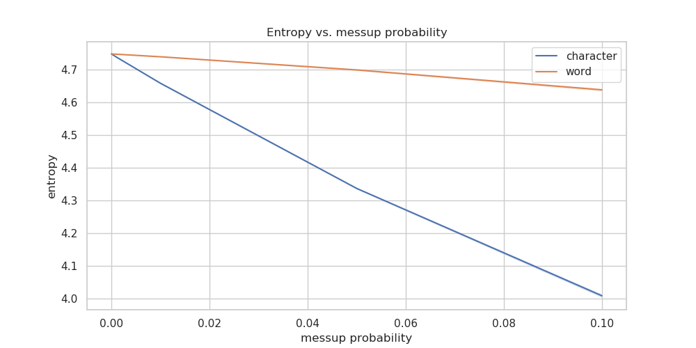
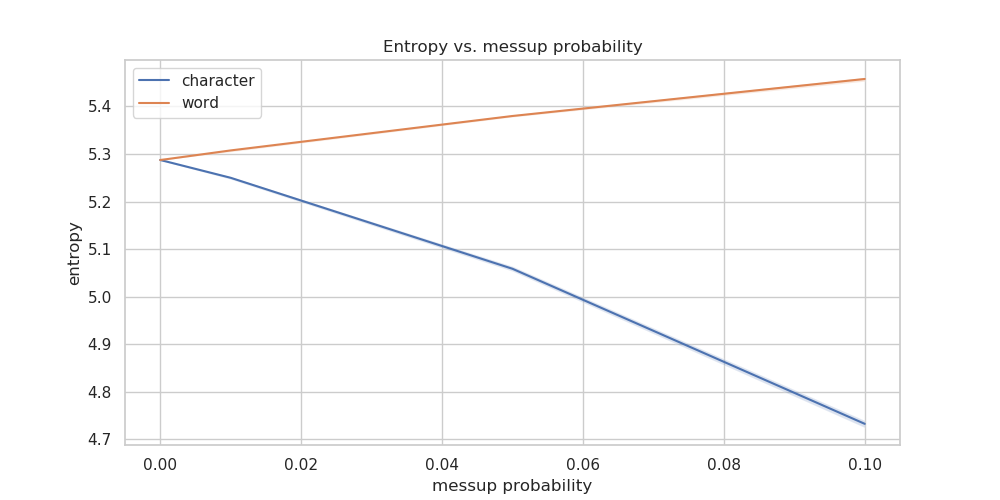

Problem statement: this experiment, you will determine the conditional entropy of the word distribution in a text given the previous word. To do this, you will first have to compute P(i,j), which is the probability that at any position in the text you will find the word i followed immediately by the word j, and P(j|i), which is the probability that if word i occurs in the text then word j will follow. Given these probabilities, the conditional entropy of the word distribution in a text given the previous word can then be computed as:
H(J|I) = -\sum_{i \in I,j \in J}P(i,j)\log_{2}P(j|i)
Perplexity is then computed simply as:
PX(P(J|I)) = 2^{H(J|I)}
Compute this conditional entropy and perplexity fo the file TEXTEN1.txt
This file has every word on a separate line. (Punctuation is considered a word, as in many other cases.) The i,j above will also span sentence boundaries, where i is the last word of one sentence and j is the first word of the following sentence (but obviously, there will be a fullstop at the end of most sentences).
Next, you will mess up the text and measure how this alters the conditional entropy. For every character in the text, mess it up with a likelihood of 10%. If a character is chosen to be messed up, map it into a randomly chosen character from the set of characters that appear in the text. Since there is some randomness to the outcome of the experiment, run the experiment 10 times, each time measuring the conditional entropy of the resulting text, and give the min, max, and average entropy from these experiments. Be sure to use srand to reset the random number generator seed each time you run it. Also, be sure each time you are messing up the original text, and not a previously messed up text. Do the same experiment for mess up likelihoods of 5%, 1%, .1%, .01%, and .001%.
Next, for every word in the text, mess it up with a likelihood of 10%. If a word is chosen to be messed up, map it into a randomly chosen word from the set of words that appear in the text. Again run the experiment 10 times, each time measuring the conditional entropy of the resulting text, and give the min, max, and average entropy from these experiments. Do the same experiment for mess up likelihoods of 5%, 1%, .1%, .01%, and .001%.
Now do exactly the same for the file TEXTCZ1.txt which contains a similar amount of text in an unknown language (just FYI, that’s Czech [*])
Tabulate, graph and explain your results. Also try to explain the differences between the two languages. To substantiate your explanations, you might want to tabulate also the basic characteristics of the two texts, such as the word count, number of characters (total, per word), the frequency of the most frequent words, the number of words with frequency 1, etc.
Attach your source code commented in such a way that it is sufficient to read the comments to understand what you have done and how you have done it.
| Language | Dataset size | Number of unique words | Number of words occurring only once |
|---|---|---|---|
| Czech | 222413 | 42827 | 26316 |
| English | 221099 | 9608 | 3812 |
Czech language has much richer morphology compared to English. In Czech language, one word can usually take on a large number grammatically correct forms, making the set of all possible valid word forms much larger than that of English.
This is apparent in the Number of unique words statistic, which is more than 4 times larger for Czech than it is for English.
Similarly, the rich morphology is also reflected in the Number of words occuring only once statistic - where there is 7x difference between those two languages.

.) are more common in Czech language, suggesting that the average Czech sentence is shorter than the English one.(, ), -, -, : is more common for the Czech dataset0, 1, 2, 3, 4, 6 in its top 50 words, the English doesn’t have any digit characters in its top-50 list (there is a word one in the list thought)| Messup type | Messup prob | Entropy mean | Entropy min | Entropy max | Perplexity mean | Perplexity min | Perplexity max |
|---|---|---|---|---|---|---|---|
| character | 0.0 | 4.747830945558377 | 4.747830945558377 | 4.747830945558377 | 26.868259177620114 | 26.868259177620114 | 26.868259177620114 |
| character | 1e-05 | 4.74771182112168 | 4.747587951770265 | 4.747796199591923 | 26.86604076505493 | 26.86373412547998 | 26.867612088412976 |
| character | 0.0001 | 4.746895248999014 | 4.7466662435906875 | 4.747200646064727 | 26.85083892365767 | 26.84657691971887 | 26.85652325919384 |
| character | 0.001 | 4.7382511991094685 | 4.736907205758305 | 4.739110579233642 | 26.69044268462023 | 26.665587441564174 | 26.70634389793559 |
| character | 0.01 | 4.6581428396786455 | 4.655832200022488 | 4.660712595310665 | 25.24881474638167 | 25.20839219291679 | 25.293812354173056 |
| character | 0.05 | 4.336964415307164 | 4.334520375552728 | 4.339747306481703 | 20.209556754136145 | 20.17533013102757 | 20.248558580930087 |
| character | 0.1 | 4.009074595548222 | 4.003593999186806 | 4.013968437147944 | 16.100992965486082 | 16.039908415144563 | 16.15566730880703 |
| word | 0.0 | 4.747830945558377 | 4.747830945558377 | 4.747830945558377 | 26.868259177620114 | 26.868259177620114 | 26.868259177620114 |
| word | 1e-05 | 4.747817580507374 | 4.747761585746187 | 4.747872015884386 | 26.868010278767873 | 26.866967475242877 | 26.869024068216905 |
| word | 0.0001 | 4.747757785717636 | 4.7476087882908695 | 4.747864509674422 | 26.866896750320524 | 26.86412211516313 | 26.868884271512947 |
| word | 0.001 | 4.7470695033988735 | 4.746727647892731 | 4.747481056852172 | 26.85408238357443 | 26.847719593917926 | 26.86174376008998 |
| word | 0.01 | 4.739222303586763 | 4.737809577135863 | 4.740582010083204 | 26.708417598550255 | 26.68227134838171 | 26.733596077791358 |
| word | 0.05 | 4.698993892777226 | 4.69691122479825 | 4.701762279097213 | 25.973970077400036 | 25.936487804101635 | 26.02384589278968 |
| word | 0.1 | 4.638169173409364 | 4.633841550413742 | 4.642131299518176 | 24.90168074401169 | 24.827060458710562 | 24.970127790754663 |

| Messup type | Messup prob | Entropy mean | Entropy min | Entropy max | Perplexity mean | Perplexity min | Perplexity max |
|---|---|---|---|---|---|---|---|
| character | 0.0 | 5.2874846405274205 | 5.2874846405274205 | 5.2874846405274205 | 39.05633421084705 | 39.05633421084705 | 39.05633421084705 |
| character | 1e-05 | 5.287458284521222 | 5.287365141815407 | 5.287518542286584 | 39.05562072789242 | 39.05309930103211 | 39.05725200286547 |
| character | 0.0001 | 5.287033508626451 | 5.286644105210353 | 5.2872426345037935 | 39.04412342164779 | 39.03358604433767 | 39.049783224560464 |
| character | 0.001 | 5.283812864627775 | 5.2824584382303845 | 5.284926841368938 | 38.95706258878103 | 38.92050267710131 | 38.98715136077336 |
| character | 0.01 | 5.250066457057137 | 5.247225744592146 | 5.252239212048611 | 38.05641213886297 | 37.98152018909365 | 38.113738262596975 |
| character | 0.05 | 5.058783843507143 | 5.05389154096547 | 5.064145702475497 | 33.330877446249396 | 33.217959301303615 | 33.454901755551404 |
| character | 0.1 | 4.732797542581993 | 4.725116864500953 | 4.740007446063153 | 26.589878947648835 | 26.44855254063063 | 26.722951344320855 |
| word | 0.0 | 5.2874846405274205 | 5.2874846405274205 | 5.2874846405274205 | 39.05633421084705 | 39.05633421084705 | 39.05633421084705 |
| word | 1e-05 | 5.2874932946907 | 5.287448294002151 | 5.2875276108201446 | 39.05656849998282 | 39.0553502578172 | 39.05749751082365 |
| word | 0.0001 | 5.2876990908301975 | 5.287605017305358 | 5.287836680943516 | 39.062140238683284 | 39.05959316141203 | 39.06586573721266 |
| word | 0.001 | 5.289390107808867 | 5.288790317599533 | 5.289901934317892 | 39.107953949912584 | 39.09169722347897 | 39.121829530437765 |
| word | 0.01 | 5.307607790228046 | 5.305000483980068 | 5.309055604832067 | 39.60493660345087 | 39.5334096503095 | 39.644686298323194 |
| word | 0.05 | 5.379988385368776 | 5.378007951926059 | 5.382309861261614 | 41.642625338238545 | 41.58547921107922 | 41.70966619723279 |
| word | 0.1 | 5.457836045908288 | 5.453280339469338 | 5.460902566780672 | 43.95143229453386 | 43.812794741319685 | 44.04488455445509 |

We can see that English has generally higher entropy than Czech. That is probably because Czech has much more words with frequency=1. When we take a look back a the top-50 words distribution, English histogram is closer to a uniform distribution (even though still far off) than Czech histogram. Or said differently, Czech word frequency distribution is more extreme, dropping off faster in the frequencies.
When we introduce character-level noise, we will in many instances create new, grammatically incorrect word forms, which results in more words occuring only once. This is probably the reason behind the entropy decreasing with the increasing messup probability.
In the case of word-level noise the situation is not that clear. We have two effects going aginst each other. Introducing random words has equalizing effect on the distribution, which should increase entropy. But it may also happen, that we lose many of the words occuring only once in the process, decreasing the vocabulary size and lowering the entropy.
For English, the equalizing effect dominates, because it doesn’t have that many words occuring only once, so the overall entropy increases. On the other hand, Czech has many words occuring only once in the original dataset, so it looses much more unique words by the random word swap, which probably ultimately results in the overall increase of entropy.
Now assume two languages, L_1 and L_2 do not share any vocabulary items, and that the conditional entropy as described above of a text T_1 in language L_1 is E and that the conditional entropy of a text T_2 in language L_2 is also E. Now make a new text by appending T_2 to the end of T_1. Will the conditional entropy of this new text be greater than, equal to, or less than E? Explain (This is a paper-and-pencil exercise of course!)
We are given: - Languages L_1, L_2 - Language bigram distributions P_1(w_i, w_{i+1}), P_2(w_i, w_{i+1})
and conditional word distributions given the previous word P_1(w_{i+1} | w_i), P_2(w_{i+1} | w_i)
Vocabularies V_1, V_2, for which V_1 \cap V_2 = \empty
Conditional entropies:
H_1(J | I) = -\frac{1}{|T_1|}\sum_{(w_i, w_{i+1}) \in T_1}\log_{2}\frac{c_{2, T_1}(w_i, w_{i+1})}{c_{1, T_1}(w_i)} = H_2(J | I) = -\frac{1}{|T_2|}\sum_{(w_i, w_{i+1}) \in T_2}\log_{2}\frac{c_{2, T_2}(w_i, w_{i+1})}{c_{1, T_2}(w_i)} = E
H_1(J | I) = -\frac{1}{|T_1|}\sum_{(w_i, w_{i+1}) \in T_1}\log_{2} P_1(w_{i+1} | w_i)= H_2(J | I) = -\frac{1}{|T_2|}\sum_{(w_i, w_{i+1}) \in T_2}\log_{2} P_2(w_{i+1} | w_i) = E
Question: What is the conditional entropy of T_3 = T_1 . T_2?
To be able to compute conditional entropy, we first need to have a probability distribution P(i) and P(i, j). The task is to compute conditional entropy as described above, that is the entropy of a bigram language model, where the conditioning history is only one word.
So the P_{3}(w_{i+1} | w_i) will be defined as:
P_{3}(w_{i+1} | w_i) = \frac{c_{2, T_3}(w_i, w_{i+1})}{c_{1, T_3}(w_{i+1})}
H_3(J | I) = -\frac{1}{|T_3|} \sum_{(w_i, w_{i + 1}) \in T_3} \log_2 P_3(w_{i+1} | w_i) = - \frac{1}{|T_1| + |T_2| + 1} (\sum_{(w_{i}, w_{i + 1}) \in T_1}{\log_2 \frac{c_{2, T_3}(w_i, w_{i+1})}{c_{1, T_3}(w_i)}} + \sum_{(w_{i}, w_{i + 1}) \in T_2}{\log_2 \frac{c_{2, T_3}(w_i, w_{i+1})}{c_{1, T_3}(w_i)}} + \log_2 \frac{c_{2, T_3}(w_{T_1, last}, w_{T_2, first})}{c_{1, T_3}(w_{T_1, last})}) =
= \frac{(|T_1| + |T_2|)\cdot E }{|T_1| + |T_2| + 1} - \frac{1}{|T_1| + |T_2| + 1} \log_2 \frac{c_{2, T_3}(w_{T_1, last}, w_{T_2, first})}{c_{1, T_3}(w_{T_1, last})} = \frac{(|T_1| + |T_2|)\cdot E }{|T_1| + |T_2| + 1} + \frac{\log_2 c_{1, T_1}(w_{T1, last})}{|T_1| + |T_2| + 1}
So the inequeality between H_3(J | I) and E exactly mirrors that of log_2 c_{1, T_1}(w_{T_1, last}) and E.
If the last word of T_1 is frequent in T_1, so much so, that log_2 c_{1, T_1}(w_{T_1, last}) > E (or equivalently c_{1, T_1}(w_{T_1, last}) > 2^E = \text{Perplexity}), then H_3(J | I) > E.
Similarly, if the count of the last word in T_1 so small, that log_2 c_{1, T_1}(w_{T_1, last}) < E, then H_3(J|I) < E
Analogically with equality.